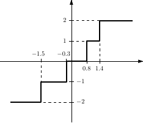

komm.LloydMaxQuantizer¶
- class LloydMaxQuantizer(levels, thresholds)[source]¶
Lloyd–Max scalar quantizer [Not implemented yet].
Properties
The quantizer levels, \(v_0, v_1, \ldots, v_{L-1}\).
The number of quantization levels, \(L\).
The finite quantizer thresholds, \(t_1, t_2, \ldots, t_{L-1}\).
Methods
__init__(levels, thresholds)Constructor for the class.
Documentation
- __init__(levels, thresholds)¶
Constructor for the class. It expects the following parameters:
levels1D array offloatThe quantizer levels \(v_0, v_1, \ldots, v_{L-1}\). It should be a list floats of length \(L\).
thresholds1D array offloatThe finite quantizer thresholds \(t_1, t_2, \ldots, t_{L-1}\). It should be a list of floats of length \(L - 1\).
Moreover, they must satisfy \(v_0 < t_1 < v_1 < \cdots < t_{L - 1} < v_{L - 1}\).
Examples
The \(5\)-level scalar quantizer whose characteristic (input × output) curve is depicted in the figure below has levels
\[v_0 = -2, ~ v_1 = -1, ~ v_2 = 0, ~ v_3 = 1, ~ v_4 = 2,\]and thresholds
\[t_0 = -\infty, ~ t_1 = -1.5, ~ t_2 = -0.3, ~ t_3 = 0.8, ~ t_4 = 1.4, ~ t_5 = \infty.\]>>> quantizer = komm.ScalarQuantizer(levels=[-2.0, -1.0, 0.0, 1.0, 2.0], thresholds=[-1.5, -0.3, 0.8, 1.4]) >>> x = np.linspace(-2.5, 2.5, num=11) >>> y = quantizer(x) >>> np.vstack([x, y]) array([[-2.5, -2. , -1.5, -1. , -0.5, 0. , 0.5, 1. , 1.5, 2. , 2.5], [-2. , -2. , -1. , -1. , -1. , 0. , 0. , 1. , 2. , 2. , 2. ]])
- property levels¶
The quantizer levels, \(v_0, v_1, \ldots, v_{L-1}\).
- property num_levels¶
The number of quantization levels, \(L\).
- property thresholds¶
The finite quantizer thresholds, \(t_1, t_2, \ldots, t_{L-1}\).